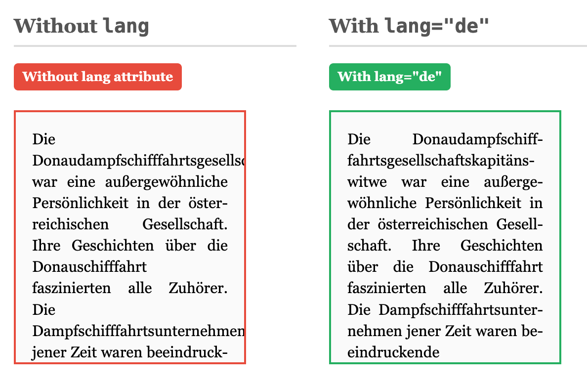
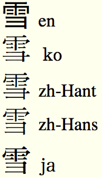

چرا باید از ویژگی زبان در برگههای وب استفاده کنم؟
ویژگی lang (یا گاهی xml:lang) زبان طبیعی محتوای یک برگه وب را مشخص میکند. افزودن این ویژگی به برچسب html زبان تمام متن موجود در برگه را تعیین میکند. اگر بخشی از برگه دارای محتوایی به زبان دیگهای باشد، میتوان ویژگی زبان را با مقدار متفاوت به عنصری که آن محتوا را در بر میگیرد، اضافه کرد. برای اطلاعات بیشتر دربارهی نحوهی استفاده از ویژگیهای زبان، به معرفی زبان در HTML مراجعه کنید.
مشخص کردن زبان محتوا شما این امکان را میدهد که بهطور خودکار کارهای مختلفی را انجام دهید، از تغییر ظاهر و رفتار یک برگه گرفته تا استخراج اطلاعات و تغییر نحوه عملکرد یک برنامه. برخی از کاربردهای زبانی در تمام آن سند کار میکنند، در حالی که برخی دیگر روی بخشهای برچسبگذاریشدهی مناسب تمرکز دارند.
بهتر است اطلاعات زبانی را هنگام ایجاد محتوا اضافه کنید تا در آینده از مزایای آن بهرهمند شوید. انجام این کار هنگام تولید محتوا ساده است، اما بعدا دشوارتر خواهد بود.
ما در اینجا چند روش که در حال حاضر برای اطلاعات زبانی مفید هستند را فهرست کردیم، اما با پیشرفت استانداردها و مرورگرها در آینده، کاربردهای بیشتری برای اطلاعات زبانی ممکن خواهد شد.
ویژگیهای زبان به شما این امکان را میدهند که ظاهر محتوای خود را بر اساس زبان تغییر دهید. برای اطلاعات بیشتر دربارهی نحوه انجام این کار، به ظاهر دادن با استفاده از ویژگی lang مراجعه کنید.
بهعنوان مثال، قلمها یا فاصلهی خطوط ممکن است برای هماهنگی با الفباهای مختلف تغییر کنند، علامتهای نقلقول تولیدشده بر اساس ظاهر ممکن است نیاز به تغییر بسته به زبان داشته باشند، و ممکن است به روشهای وابسته به زبان بیان شود و غیره.
مثال زیر نشان میدهد که چگونه میتوان یک قلم خاص را برای متن عربی جاسازیشده در یک برگه تنظیم کرد.
body {
font-family: "Palatino Linotype", "Book Antiqua", Palatino, serif;
}
:lang(ar) {
font-family: "Traditional Arabic", "Al Bayan", serif;
}نمونهای دیگر از رفتار وابسته به زبان، خط تیره است که قوانین خط تیره بسیار وابسته به زبان هستند. توضیحات مربوط به ویژگی hyphens در CSS (که در زمان نگارش این متن تازه مورد پذیرش مرورگرها قرار گرفته است) بیان میکند: «خط تیره خودکار صحیح نیازمند یک منبع خط تیرهگذاری مناسب برای زبان متن شکسته شده است. بنابراین، UA تنها موظف به خط تیره خودکار برای متنی است که نویسنده زبان آن را مشخص کرده است (مانند استفاده از lang در HTML یا xml:lang در XML) و برای آن یک منبع خط تیره مناسب دارد.»

lang="de" is specified, breaking long compound words properly and improving text flow. (Live test.)دیگر ویژگیهای تایپوگرافی و چیدمان که تحت تاثیر زبان قرار میگیرند شامل شکستن خطوط، تنظیم فاصلهها و تبدیل حروف به حالتهای مختلف هستند و با توسعهی مشخصات، موارد بیشتری نیز اضافه خواهند شد.
عاملهای کاربر (User-agents) میتوانند (معمولا این کار را انجام میدهند) از اطلاعات زبان برای انتخاب قلمهای مناسب زبان استفاده کنند، که تجربه کلی کاربر از برگه وب را بهبود میبخشد.
به عنوان مثال، در یک برگهای که با Unicode کدگذاری شده است، متن به زبانهای چینی سادهشده، چینی سنتی، ژاپنی و کرهای ممکن است یک نقطهی کد مشترک برای یک حرف تصویری داشته باشد، اما افرادی که با این زبانها صحبت میکنند انتظار دارند که گلیفهای مورد استفاده بسته به زبان متفاوت باشد. در صورت عدم اعمال ظاهر مشخص توسط نویسنده محتوا، برخی مرورگرها بهطور خودکار قلمهای مناسب را بر اساس زبان محتوا اختصاص میدهند. تصویر زیر نشان میدهد که فقط تغییر مقدار ویژگی زبان در مرورگری مانند Firefox یا Internet Explorer چگونه روی نمایش متن تاثیر میگذارد.

اگر چه موتورهای جستجوی بزرگ معمولا از تشخیص خودکار زبان برای شناسایی زبان منبع استفاده میکنند، اما نشانهگذاری داخلی برگه میتواند برای بهبود کیفیت نتیجههای جستجو بر اساس ترجیحات زبانی کاربر استفاده شود.
ابزارهای ترجمه میتوانند از ویژگیهای زبان برای شناسایی برگهها یا بخشهای متنی در یک زبان خاص استفاده کنند و بهطور خودکار گردش کار را تنظیم کنند یا متن را از تغییرات مترجم در ابزارهای ترجمه محافظت کنند.
اطلاعات زبانی به سینتی سایزر کنندهای گفتار و مترجمهای بریل کمک میکند تا نتیجههای قابل استفادهای تولید کنند. این برنامهها باید بدانند که آیا میتوانند خروجیای از متن تولید کنند یا اینکه ممکن است نیاز به تغییر حالت زبانی داشته باشند.
برچسبگذاری زبان توسط راهنمای دسترسیپذیری وب W3C توصیه شده و در برخی کشورها، مانند انگلستان، بر اساس قوانین دولتی اجرا میشود، مانند قانون تبعیض علیه افراد دارای معلولیت (انگلستان).
برچسبگذاری محتوا با اطلاعات زبانی همچنین امکان پردازشهای ویژهی زبان را فراهم میکند.
بهعنوان مثال، یک اسکریپت یا برگهی ظاهر XSLT میتواند برای انجام کارهای مختلفی استفاده شود، از جمله:
به خاطر داشته باشید که هنگام ایجاد اطلاعات، همیشه نمیدانید دیگران چگونه قصد دارند اطلاعات شما را پردازش کنند.
میزان استفاده از برچسبگذاری زبان در سالهای اخیر با پیشرفت فناوری افزایش یافته و همچنان به رشد خود ادامه خواهد داد. در بسیاری از موارد، این کاربردها ممکن است، در مراحل اولیهی توسعهی محتوا مهم به نظر نرسند اما با گذشت زمان ارزش آنها بیشتر میشود. با این حال، ما با یک مشکل چرخهای روبهرو هستیم. افرادی که کاربردهای اطلاعات زبانی را نمیبینند، اطلاعات زبانی محتوای خود را ارائه نمیدهند. به همین دلیل، برنامههای مرتبط با زبان به کندی مستقر میشوند تا زمانی که این اطلاعات بهطور گسترده در محتوا به کار گرفته شوند. این چرخه را میتوان با افزودن اطلاعات زبانی توسط تولیدکنندگان محتوا برطرف کرد. هرچه محتوای بیشتری به درستی برچسبگذاری شود، این برنامهها مفیدتر و گستردهتر خواهند شد. افزودن اطلاعات زبانی معمولا آسان است و هیچ هزینهای ندارد.
شروع کار؟ زبان در وب
آموزش، کار با زبان در HTML
پیوندهای مرتبط، نگارش زبان در برگههای وب